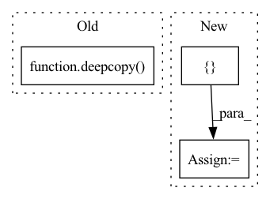

Pattern ID :23769
Before Change
input_constraint, this_info = self.get_one_step_backprojection_set(
output_constraint, input_constraint, num_partitions=num_partitions, overapprox=overapprox
)
input_constraints.append(deepcopy( input_constraint) )
info = {"per_timestep": []}
info["per_timestep"].append(this_info)
After Change
input_constraint_list = []
tightened_infos_list = []
if not isinstance(output_constraints, list):
output_constraint_list = [ deepcopy(output_constraints)In pattern: SUPERPATTERN
Frequency: 5
Non-data size: 3
Instances Fragment ID: 74220172
Project Name: mit-acl/nn_robustness_analysis
Commit Name: 042a46d2012f8c1862cfedb24d600fbbad1ac007
Time: 2022-03-09
Author: nrober1122@gmail.com
File Name: nn_closed_loop/nn_closed_loop/propagators/ClosedLoopPropagator.py
M Class Name: ClosedLoopPropagator
N Class Name: ClosedLoopPropagator
M Method Name: get_backprojection_set(6)
N Method Name: get_backprojection_set(6)
M Parent Class: propagators.Propagator
N Parent Class: propagators.Propagator
M File Name: nn_closed_loop/nn_closed_loop/propagators/ClosedLoopPropagator.py
N File Name: nn_closed_loop/nn_closed_loop/propagators/ClosedLoopPropagator.py
M Start Line: 38
M End Line: 68
N Start Line: 39
N End Line: 52
Before Change
labels = sorted(documents, reverse=reverse, key=lambda x: x[score_field])
labels = labels[:max_number_of_labels]
labels = [l for l in labels if l[score_field] > similarity_threshold]
new_labels = deepcopy( labels)
// remove labels from labels
[l.pop(vector_field) for l in new_labels]
return new_labels
After Change
labels = sorted(documents, reverse=reverse, key=lambda x: x[score_field])
labels = [l for l in labels if l[score_field] > similarity_threshold]
counter = 0
new_labels = []
for label in labels:
label_text = self.get_field(self.label_field, label)
label_texts = self.get_field_across_documents(self.label_field, new_labels)
if label_text not in label_texts:
new_labels.append(deepcopy(label))
counter += 1 Fragment ID: 74220189
Project Name: relevanceai/relevanceai
Commit Name: 93ce201855d6052bdf1dec80609b7073abb4c379
Time: 2022-07-27
Author: jacky.wong@relevance.ai
File Name: relevanceai/operations_new/label/transform.py
M Class Name: LabelTransform
N Class Name: LabelTransform
M Method Name: cosine_similarity(8)
N Method Name: cosine_similarity(8)
M Parent Class: TransformBase
N Parent Class: TransformBase
M File Name: relevanceai/operations_new/label/transform.py
N File Name: relevanceai/operations_new/label/transform.py
M Start Line: 196
M End Line: 199
N Start Line: 197
N End Line: 210
Before Change
self, output_constraint, input_constraint, propagator, num_partitions=None, overapprox=False, refined=False
):
input_constraint, info = propagator.get_one_step_backprojection_set(
output_constraint, deepcopy( input_constraint) , num_partitions=num_partitions, overapprox=overapprox, refined=refined
)
return input_constraint, info
After Change
xt_min = backreachable_set[..., 0]
xt_max = backreachable_set[..., 1]
nn_input_max = torch.Tensor(np.array([xt_max]))
nn_input_min = torch.Tensor(np.array([ xt_min Fragment ID: 74220187
Project Name: mit-acl/nn_robustness_analysis
Commit Name: 63e79909e36636ad1ba6c548408a853c1564488d
Time: 2022-06-08
Author: mfe@mit.edu
File Name: nn_closed_loop/nn_closed_loop/partitioners/ClosedLoopPartitioner.py
M Class Name: ClosedLoopPartitioner
N Class Name: ClosedLoopPartitioner
M Method Name: get_one_step_backprojection_set(7)
N Method Name: get_one_step_backprojection_set(7)
M Parent Class: partitioners.Partitioner
N Parent Class: partitioners.Partitioner
M File Name: nn_closed_loop/nn_closed_loop/partitioners/ClosedLoopPartitioner.py
N File Name: nn_closed_loop/nn_closed_loop/partitioners/ClosedLoopPartitioner.py
M Start Line: 367
M End Line: 370
N Start Line: 483
N End Line: 507
Before Change
self, output_constraint, input_constraint, propagator, t_max, num_partitions=None, overapprox=False, refined=False
):
input_constraint_, info = propagator.get_backprojection_set(
output_constraint, deepcopy( input_constraint) , t_max, num_partitions=num_partitions, overapprox=overapprox, refined=refined
)
input_constraint = input_constraint_.copy()
After Change
):
// Initialize data structures to hold results
backprojection_sets = []
info = {"per_timestep": []}
// Run one step of backprojection analysis
backprojection_set_this_timestep, info_this_timestep = self.get_one_step_backprojection_set( Fragment ID: 74220192
Project Name: mit-acl/nn_robustness_analysis
Commit Name: 63e79909e36636ad1ba6c548408a853c1564488d
Time: 2022-06-08
Author: mfe@mit.edu
File Name: nn_closed_loop/nn_closed_loop/partitioners/ClosedLoopPartitioner.py
M Class Name: ClosedLoopPartitioner
N Class Name: ClosedLoopPartitioner
M Method Name: get_backprojection_set(8)
N Method Name: get_backprojection_set(8)
M Parent Class: partitioners.Partitioner
N Parent Class: partitioners.Partitioner
M File Name: nn_closed_loop/nn_closed_loop/partitioners/ClosedLoopPartitioner.py
N File Name: nn_closed_loop/nn_closed_loop/partitioners/ClosedLoopPartitioner.py
M Start Line: 375
M End Line: 380
N Start Line: 527
N End Line: 565
Before Change
else:
line.save(model, only_meta=True)
self.metrics.append(deepcopy( model.metrics) )
logger.info(f"Epoch {epoch}: {model.metrics}")
end_time = pendulum.now()After Change
for epoch in range(epochs):
// Empty model"s metrics to not to repeat them
// in epochs where no evaluation
model.metrics = {}
// Train model
model.fit(train_data, **train_kwargs)
Fragment ID: 74220178
Project Name: oxid15/cascade
Commit Name: 73a1bfbe890ec28174ba5ed7a064038495ab8a34
Time: 2022-09-23
Author: villeman.5@yandex.ru
File Name: cascade/models/trainer.py
M Class Name: BasicTrainer
N Class Name: BasicTrainer
M Method Name: train(2)
N Method Name: train(2)
M Parent Class: Trainer
N Parent Class: Trainer
M File Name: cascade/models/trainer.py
N File Name: cascade/models/trainer.py
M Start Line: 157
M End Line: 157
N Start Line: 144
N End Line: 161